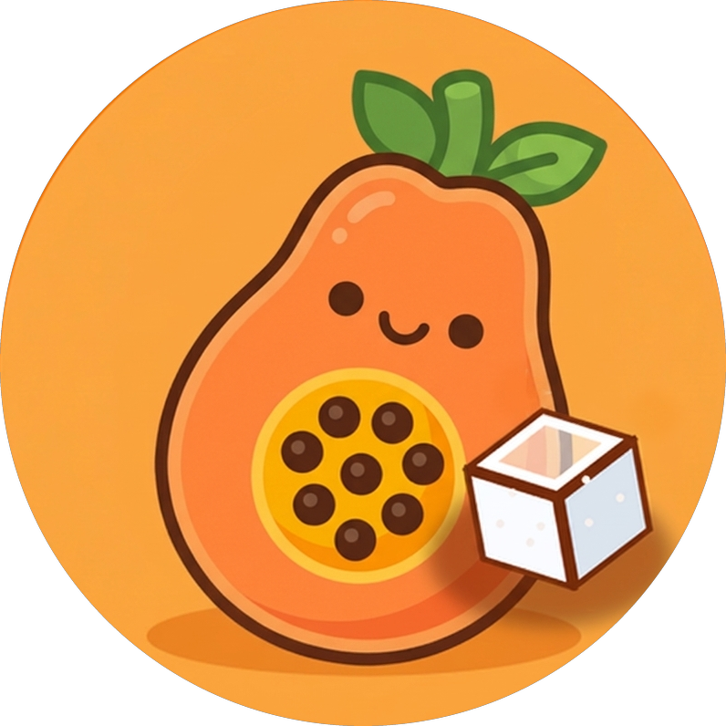

Mamão com Açúcar
Mapeamento Geoespacial Botânico ColaborativoAplicativo colaborativo para localização, catálogo e monitoramento do ciclo de maturação de árvores frutíferas em logradouros públicos. Reescrito do zero em Flutter (Dart) com motor gráfico Impeller, aposentando bases legadas separadas em prol de um único repositório unificado com paridade total de recursos.
- Engine Gráfica & Mapas a 60 FPS: Renderização com tile caching offline via
flutter_map8 (OpenStreetMap e Satélite Esri), clustering dinâmico e cálculo de proximidade geodésica pela Fórmula de Haversine. - Guia Botânico & Gamificação: Catálogo estruturado com 71 espécies nativas por biomas brasileiros, Welcome Screen estilo Duolingo, insígnias de conquistas e isolamento adaptativo de geolocalização no navegador.
- Tração & Validação: Post técnico viralizando no LinkedIn com mais de 140.000 visualizações orgânicas e usuários cadastrando centenas de árvores em diversas cidades.